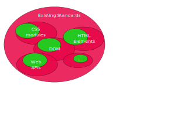
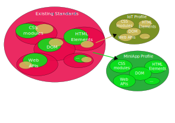

26 March 2025
Discussion on how to diversify the ecosystem of Web engines, while increasing efficiency and UX on Web and WebView-based apps while maintaining interoperability with existing standards and preserving the One-Web principle.
New engines? Specific-purpose WebViews (MiniApps, IoT sensors)? Toolsets...
New Web core? New standards? Standard profiles...
on Web Performance by Vic Yao
on Modularity
Remove deprecated parts, add only the relevant ones for the use cases
Remove deprecated parts, add only the relevant ones for the use cases
Definition of High-Performance profiles for specific standards.
See the standards gap analysis of MiniApp APIs and MiniApp elements.
| Type | API | Description | #1 | #2 | #3 | #4 | 2+ | Standard |
|---|---|---|---|---|---|---|---|---|
| Data management | Data storage | Get, set key=value pairs | yes | yes | yes | yes | yes | Storage API (IndexedDB API), Web Storage API |
| File system management | Storage, management in the local file system | yes | yes | yes | yes | yes | File System API, File and Directory Entries API | |
| Data exchange with other MiniApps | Data exchange between installed apps | yes | yes | yes | yes | Broadcast Channel API, Channel Messaging API | ||
| Compression/Decompression | ZIP file compression/decompression | yes | yes | yes | yes | |||
| Clipboard | Clipboard set/get | yes | yes | yes | yes | yes | Clipboard API | |
| Cryptography | Encryption, decryption, random | yes | yes | yes | yes | Web Crypto API | ||
| Cache | Cache management (rules, cleaning, etc.) | yes | Content Index API | |||||
| Sensors | Accelerometer | Sensors | yes | yes | yes | yes | yes | Sensor APIs (Accelerometer) |
| Compass | Sensors | yes | yes | yes | yes | yes | Sensor APIs (Magnetometer) | |
| Gyroscope | Sensors | yes | yes | yes | yes | yes | Sensor APIs (Gyroscope) | |
| Proximity sensor | Sensors | yes | Proximity Sensor | |||||
| Step counter | Sensors | yes | yes | yes | yes | |||
| Ambient light sensor | Sensors | Sensor APIs (Ambient Light Sensor) |
| Type | Feature | Style? | Funct.? | Rec? | Standard solution? |
|---|---|---|---|---|---|
| Container | Content division | <div> |
direct usage | ||
| Inline container | <span> |
direct usage | |||
| Dialog | <dialog> |
direct usage | |||
| Stacking container | yes | <div>* |
HTML + CSS (div { position: relative; }) |
||
| Slideshow (carousel) | yes | <div>* |
HTML + CSS Flexbox + overscroll-behavior + scroll-behavior... |
||
| Tabs | yes | <nav> <section>* |
(OpenUI) (navs + section + CSS) |
||
| List container | yes | <ul><li> |
HTML + CSS | ||
| Fixed container | yes | <div>* |
HTML + CSS | ||
| Scrolling container | yes | <div>* |
HTML + CSS | ||
| Grid layout | yes | <div>* |
HTML + CSS | ||
| Marquee | yes | <marquee> (deprecated)* |
HTML + CSS | ||
| Drag and drop | yes | <div>* |
HTML + Drag and Drop API | ||
| Pull to refresh | yes | <div>* |
HTML + JS + CSS | ||
| Conditional block | @style |
CSS media queries | |||
| Navigation Bar | <nav> |
HTML + CSS |
AMP HTML is a subset of HTML for authoring content pages such as news articles in a way that guarantees certain baseline performance characteristics.
HTML, CSS minimized, JS limited, pre-fetching, caching...
Also advanced components (PWA):
<amp-install-serviceworker
src="https://www.your-domain.com/serviceworker.js"
data-iframe-src="https://www.your-domain.com/install-serviceworker.html"
layout="nodisplay">
</amp-install-serviceworker>Also Baidu's MIP
Raise your hand or q+ on IRC
Note for me: Remember to stop the recording
To start the slide show, press ‘A’. Return to the index with ‘A’ or ‘Esc’. On a touch screen, use a 3-finger touch. Double click to open a specific slide. In slide mode, press ‘?’ (question mark) to get a list of available commands.